I will be joining the Information Technology and Cybersecurity division of the U.S Government Accountability Office as a student intern.
My responsibilities will be to develop methodlogically sound techniques to evaluate federal IT programs. Specifically, I will be
planning and conducting in-depth audits and evaluations of executive and legislative branch IT programs. My position will focus on
researching and analyzing information regarding collaborations with federal agencies.
Skills: Research, Data Analysis, Technical Writing & Speaking
In an intensive 10 week program, I pursued independent research on malware detection in smartphone devices.
My mentor and I specifically focused on building a classifier on detecting whether an Android application
is malicious or benign by using machine learning algorithims like K-Nearest Neighbor, Linear Regression, and
Support Vector Machines. My development of two classifier models were able to produce results of up to 91% accuracy
with Ensemble Learning techniques called homogeneous stacking and heterogeneous stacking. Every week,
I provided in-depth reports and presentations of my findings to the student and faculty members of the REU program.
In the conclusion of the program, I submitted a technical paper that was accepted for publication to the MIT IEEE
Undergrduate Research Technology Conference. My paper's acceptance also allowed me to become a grant recipient with
the Rocky Mountain Biologial Laboratory to participate in the conference. At MIT, I had the opportunity to give
professors and other undergraduate researchers an oral presentation of my research.
EnsembleDroid: A Malware Detection Approach for
Android System based on Ensemble Learning
Skills: Research, Python, Machine Learning, Ensemble Learning, Technical Writing & Speaking

I worked as a teacher in a tutoring center for students ranging from 5 years to 16 years old. In the morning, I worked one on one
with younger kids who had learning disabilities and did not speak English. I assisted these kids in completing their assignments and
provided emotional support to ensure they were academically motivated. In the afternoon, I worked with high school students on SAT Math and English.
I taught daily lessons on each subject and tutored them on specific topics that required a more complex understanding.
In addition, I provided feedback on their essays and conducted weekly practice exams that would allow them to adapt to the testig pace.
My responsibilities as a teacher also included planning group projects and facilitating class discussions while reinforcing a positive enviroment to
work and study in.
Skills: Leadership, Communication, Management, Teaching, Organization
I provided services to an afterschool program that supervised kids from 5 years old to 13 years old. Because this program had a great participation
of immigrant students, a lot of my responsibilities included tutoring students and assisting them with completing their assignments as well as
translating and practicing English with them.
Skills: Leadership, Communication, English